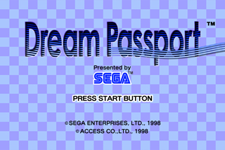
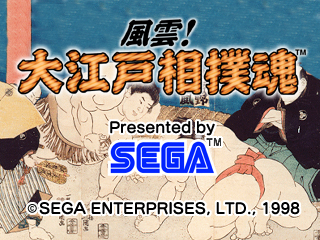
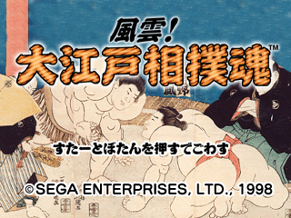

<html>

<head>
<meta HTTP-EQUIV="Content-Type" CONTENT="text/html; charset=windows-1252">
<meta NAME="GENERATOR" CONTENT="Microsoft FrontPage 3.0">
<title>Dreamcast Software Development Standards</title>
<meta NAME="Template" CONTENT="C:\PROGRAM FILES\MICROSOFT OFFICE\OFFICE\html.dot">
<x-sas-window top="68" bottom="600" left="12" right="542">
</head>

<body LINK="#0000ff" VLINK="#800080" BACKGROUND="IMG00000.jpg">

<p ALIGN="CENTER"><a HREF="05.html"></a><font SIZE="4">&nbsp;&nbsp;&nbsp;&nbsp;&nbsp;&nbsp;&nbsp;&nbsp;&nbsp;&nbsp;&nbsp;&nbsp;&nbsp;&nbsp;&nbsp;&nbsp;&nbsp;&nbsp;&nbsp;&nbsp;&nbsp;&nbsp;&nbsp;&nbsp;&nbsp;&nbsp;&nbsp;&nbsp;&nbsp;&nbsp;&nbsp;&nbsp;&nbsp;&nbsp;&nbsp;&nbsp;&nbsp;&nbsp;</font><a
HREF="07.html"></a><font
SIZE="4"> </p>
</font>

<hr>
<font SIZE="4">

<p ALIGN="CENTER">Dreamcast Software Development Standards/Ver. 2.00EU</p>
</font>

<hr>

<p ALIGN="CENTER"><a NAME="BM6_"></a><font
SIZE="5"><b>6. Title Screen</p>

<dir>
  </b></font><font COLOR="#800000"><blockquote>
    <p>In the following descriptions, the Title Screen is defined as the &quot;Game Start
    Screen.&quot; The period before the START button is pressed at this screen is referred to
    as &quot;Before Game Start,&quot; and the period afterward is called &quot;After Game
    Start.&quot;</p>
  </blockquote>
  <blockquote>
    <p>Also, the conditions after a game has been started are referred to as &quot;during the
    main game.&quot; </p>
  </blockquote>
</dir>
</font>

<p ALIGN="CENTER"></p>

<blockquote>
  <p><font COLOR="#800000"></font><font
  SIZE="4"><b> Required: The Title Screen displays the Title Logo, &quot;PRESS START
  BUTTON&quot; and copyright, unless specified otherwise by contract document or difficulty
  (such as a movie title) to display the copyright because of lack of space.</p>
</blockquote>

<dir>
  </b></font><blockquote>
    <p>If &quot;PRESS START BUTTON&quot; is displayed in any language other than English,
    express the idea that pressing the start button will start the game as simply as possible.<br>
    <br>
    For the SEGA Brand, if it is difficult to display the copyright display on the title
    screen due to lack of space, select the pattern described in <a HREF="05.html#5.2.2">5.2.2</a>
    and display the copyright information on the screen preceding the title screen.<br>
    <br>
    Also for the SEGA Brand, display the SEGA Logo on the title screen while keeping user
    interface in mind. This follows the pattern described in <a HREF="05.html#5.2.1">5.2.1</a>.
    However, for special reasons, the SEGA logo may also be displayed on a screen other than
    the title screen. This follows the pattern described in <a HREF="05.html#5.2.2">5.2.2</a>.</p>
  </blockquote>
  <li> <font SIZE="2"
    COLOR="#800000"><blockquote>
      <p>If there is not enough space to display both the SEGA Logo and the &quot;PRESS START
      BUTTON&quot; message at the same time, display the SEGA Logo first,</p>
    </blockquote>
    <p> </p>
    <blockquote>
      <p>and then display the &quot;PRESS START BUTTON&quot; message in the same place.</p>
    </blockquote>
  </li>
</dir>
</font><font SIZE="4"><b>

<p>6.1 Title Logo Display</p>
</b></font>

<blockquote>
  <p><font COLOR="#800000"></font><font
  SIZE="4"><b> Required: If transition to the next screen is not initiated by user input,
  display the Title Logo for about two seconds.</p>
</blockquote>
</b></font>

<blockquote>
  <p><font COLOR="#800000"></font><font
  SIZE="4"><b> Required: (Sega Brand Only) Except for other companies' trademarks, [TM] is
  always attached to the Title Logo. For other companies' trademarks, follow the
  instructions in the contract document. If there are no such instructions in a contract
  document, follow the original indication method.</p>
</blockquote>

<p><a NAME="BM6_2"></a>6.2 Copyright Display</p>
</b></font>

<blockquote>
  <p><font COLOR="#800000"></font><font
  SIZE="4"><b> Required: (Sega Brand Only) Unless specially regulated by contract documents,
  the following copyright indication is displayed.</p>
</blockquote>

<dir>
  </b></font><blockquote>
    <p>[(C)SEGAENTERPRISES,LTD.,1999]<br>
    = Space Character<br>
    <br>
    Note: &quot;(C) [Proper Company Name] [Year of First Release]&quot;<br>
    <br>
    There are no other guidelines regarding characters and colours. The year of first release
    is the first year of sales.<br>
    <br>
    <br>
<However, for business transfer or version remake>    <br>
    visually the same - only the original product year of issue<br>
    <br>
    When original elements are added as a CS version - Year of creation and year of issue for
    the software together<br>
    <br>
    &quot;(C) SEGA ENTERPRISES, LTD., 1986,1999&quot;</p>
  </blockquote>
  <blockquote>
    <p><br>
    <font COLOR="#800000"><b>Note: </b>If you have doubts about any title, please consult the
    Intellectual Property Department.</p>
  </blockquote>
</dir>
</font><font SIZE="4"><b>

<p>6.3 Advancing to Next Screen</p>
</b></font>

<blockquote>
  <p><font COLOR="#800000"></font><font
  SIZE="4"><b> Required: Advancing to the Main Game or Start/Option screen should occur only
  when the START button is pressed at the Title Screen.</p>
</blockquote>

<dir>
  </b></font><blockquote>
    <p>If the START button is not pressed, proceed to the next screen of the title loop after
    a short time has elapsed, as mentioned in <a HREF="03.html#3.">3. Sequences before Game
    Start</a>.</p>
  </blockquote>
</dir>

<hr>

<p ALIGN="CENTER"><a HREF="05.html"></a><font SIZE="4">&nbsp;&nbsp;&nbsp;&nbsp;&nbsp;&nbsp;&nbsp;&nbsp;&nbsp;&nbsp;&nbsp;&nbsp;&nbsp;&nbsp;&nbsp;&nbsp;&nbsp;&nbsp;&nbsp;&nbsp;&nbsp;&nbsp;&nbsp;&nbsp;&nbsp;&nbsp;&nbsp;&nbsp;&nbsp;&nbsp;&nbsp;&nbsp;&nbsp;&nbsp;&nbsp;&nbsp;&nbsp;&nbsp;</font><a
HREF="07.html"></a><font
SIZE="4"> </p>
</font>

<hr>
<font SIZE="4"><i>

<p ALIGN="CENTER">Copyright SEGA ENTERPRISES, LTD., 1998,1999 and Sega Europe 1999</p>
</i></font>

<hr>
</body>
</html>
